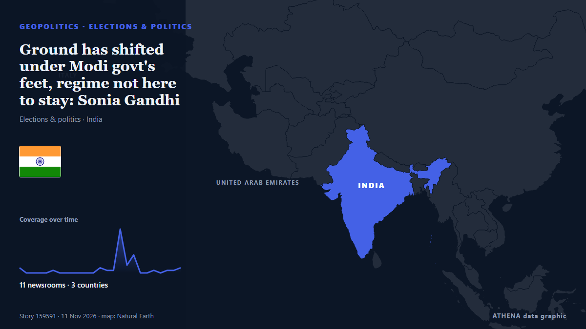

Ground has shifted under Modi govt's feet, regime not here to stay: Sonia Gandhi

New Delhi: The "ground has shifted" under the Modi government's feet, says Congress Parliamentary Party chairperson Sonia Gandhi, firm in her belief that this regime is not here to say and the… από Deccan Herald
Αναφέρθηκε ανεξάρτητα από 11 μέσα σε 3 χώρες από τις 8 Νοε, πρώτο το Deccan Herald· η κάλυψη εξασθενεί. Το ATHENA εκτιμά τον κίνδυνο μέτριο (3.6/10), κυρίως λόγω της σοβαρότητάς του και της τεκμηρίωσης. Βεβαιότητα 81% (υψηλή): το επιβεβαιώνουν 11 ανεξάρτητα μέσα, μέση αξιοπιστία 69%. Μέσα ανά χώρα: Ινδία (35), Ηνωμένα Αραβικά Εμιράτα (3), Ηνωμένο Βασίλειο (1). Κάλυψη: 8 Νοε έως 11 Νοε, 74 ώρες.
Γιατί έχει σημασία: Οι εξελίξεις στην ασφάλεια και τη διπλωματία μπορούν να μετατοπίσουν συμμαχίες, εμπόριο και αγορές πολύ πέρα από τις χώρες που εμπλέκονται.
Τι άλλαξε: 13 νέες αναφορές από 6 μέσα στο 24ωρο έως 11 Νοε.
Πρώτη διατύπωση: Sonia Gandhi reminisces her early memories of celebrating Diwali
Οι τίτλοι των ειδήσεων παρουσιάζονται στα αγγλικά, όπως δημοσιεύτηκαν.
Πώς να διαβάσετε αυτή τη σελίδα
- Τι διαβάζετε
- 11 μέσα σε 3 χώρες ανέφεραν αυτό το γεγονός. Οι αναφορές παρακάτω εμφανίζονται με τη σειρά που δημοσιεύτηκαν· κάθε τίτλος ανοίγει το αρχικό άρθρο. Το ATHENA δεν γράφει δικά του ρεπορτάζ.
- Η εκτίμησή μας
- Για την καταγραφή — Οι αναφορές περιγράφουν ένα ολοκληρωμένο, εσωτερικό, εμπορικό ή προσωπικό ζήτημα. Το καταγράφουμε ώστε να βλέπετε ποιος το ανέφερε και πότε. Δεν παρακολουθούμε εδώ κίνδυνο ευρύτερης σύγκρουσης.
- Πόσα στοιχεία υπάρχουν
- Περιορισμένη Αντιμετωπίστε τη σελίδα ως πρώιμη αναφορά.
Αφού αφαιρεθούν οι επαναλήψεις, τα άσχετα και τα παλιά στοιχεία, υπολογίζονται 11 από τις 39 αναφορές που παρατίθενται· το 97% των τίτλων αντιστοιχεί στο γεγονός.
Περίπου το 55% των τίτλων είναι ανάλυση ή άποψη και όχι απλό ρεπορτάζ.
- Τι δεν σημαίνει
- Το ATHENA μετρά πώς καλύπτεται ένα γεγονός, όχι αν είναι αληθές. Δεν είναι πρόβλεψη, κρίση για το ποιος έχει δίκιο ή συμβουλή.
- Τι θα την άλλαζε
- Αναφορές από άλλα ανεξάρτητα μέσα που δείχνουν διαφορετική εξέλιξη, ή σαφής επιβεβαίωση ή διάψευση από επίσημη πηγή.
Εκτίμηση R2 · ανανεώνεται με κάθε ενημέρωση της σελίδας. Το ATHENA δεν έχει δημοσιεύσει ακόμη ιστορικό επιδόσεων για αυτές τις εκτιμήσεις· όταν το κάνει, θα συνδέεται εδώ.
Με μια ματιά
Επιλέγεται, βαθμολογείται και γράφεται από τη δημοσιευμένη μεθοδολογία του ATHENA. Κανένας συντάκτης δεν παρεμβαίνει σε μεμονωμένα γεγονότα. Πώς παράγεται ›
| 08 Nov 10:12 UTC | 2 |
|---|---|
| 08 Nov 13:12 UTC | 0 |
| 08 Nov 16:12 UTC | 0 |
| 08 Nov 19:12 UTC | 0 |
| 08 Nov 22:12 UTC | 0 |
| 09 Nov 01:12 UTC | 1 |
| 09 Nov 04:12 UTC | 0 |
| 09 Nov 07:12 UTC | 0 |
| 09 Nov 10:12 UTC | 0 |
| 09 Nov 13:12 UTC | 0 |
| 09 Nov 16:12 UTC | 0 |
| 09 Nov 19:12 UTC | 0 |
| 09 Nov 22:12 UTC | 2 |
| 10 Nov 01:12 UTC | 1 |
| 10 Nov 04:12 UTC | 1 |
| 10 Nov 07:12 UTC | 17 |
| 10 Nov 10:12 UTC | 3 |
| 10 Nov 13:12 UTC | 7 |
| 10 Nov 16:12 UTC | 0 |
| 10 Nov 19:12 UTC | 0 |
| 10 Nov 22:12 UTC | 1 |
| 11 Nov 01:12 UTC | 0 |
| 11 Nov 04:12 UTC | 1 |
| 11 Nov 07:12 UTC | 1 |
| 11 Nov 10:12 UTC | 2 |
| 08 Nov 12:13 UTC | 1.0 |
|---|---|
| 08 Nov 14:09 UTC | 2.3 |
| 10 Nov 14:15 UTC | 3.6 |
| 10 Nov 17:32 UTC | 4.3 |
| 11 Nov 14:12 UTC | 3.6 |
| 11 Nov 14:12 UTC | 3.6 |
Γιατί αυτοί οι αριθμοί
Σημασία
Κίνδυνος
Βεβαιότητα
Η κάλυψη — ποιος το ανέφερε και πότε
ο τίτλος όπως δημοσιεύτηκε · ανοίγει το πρωτότυπο- Deccan Herald · ΙνδίαSonia Gandhi reminisces her early memories of celebrating Diwali
- Times of India · ΙνδίαWatch: Sonia, Priyanka take a trip down memory lane, recall Diwali with Rajiv Gandhi
- Hindustan Times · Ινδία'Wanted to portray my family honestly': Sonia Gandhi explains reason behind writing her memoir
- Hindustan Times · ΙνδίαLittle real contact with Modi, but there is some common ground: Sonia Gandhi in memoir Belonging
- Indian Express · ΙνδίαPressured by Congress, Sonia Gandhi said ‘yes’ to PM post. How Rahul reacted
- Hindustan Times · ΙνδίαIn memoir, Sonia Gandhi recalls UPA power dynamics with Manmohan, Pranab’s 2010 PM post hint
- Indian Express · Ινδία‘He shocked me’: Sonia Gandhi on Pranab Mukherjee’s PM hint
- The Guardian · Ηνωμένο ΒασίλειοGrenades, grief and a deepening political divide: five takeaways from Sonia Gandhi’s new memoir
- Indian Express · Ινδία‘Felt shaken and worried’: Sonia Gandhi’s account of her battle with cancer
- Gulf News · Ηνωμένα Αραβικά ΕμιράταSonia Gandhi's big revelation about Narendra Modi: 'He tends to look away'
- Indian Express · Ινδία‘Whitewashing’: BJP accuses Sonia Gandhi of trying to justify Emergency in her memoir
- The Hindu · ΙνδίαSonia Gandhi trying to justify Emergency, memoir should've been named ‘Whitewashing’: BJP
- Indian Express · ΙνδίαNarendra Modi avoids eye contact during meetings, Sonia Gandhi writes in memoir
- Indian Express · ΙνδίαWhat Rahul Gandhi told Sonia Gandhi about Rajiv’s death 2 months before it happened
- NDTV · ΙνδίαWhy Sonia Gandhi Begged Husband Not To Enter Politics But Didn't Stop Son
- NDTV · Ινδία'Pranab Mukherjee Shocked Me With Change At Top Suggestion': Sonia Gandhi
- NDTV · Ινδία"He Tends To Look Away, Avoiding Eye Contact": Sonia Gandhi On PM Modi
- NDTV · ΙνδίαSonia Gandhi's Interview With NDTV In 2004, Now Seen From Her Memoir's Lens
- Deccan Herald · Ινδία‘Practically no real contact’: Sonia Gandhi details dynamic with PM Modi in her memoir
- Times of India · Ινδία'No real contact': Sonia's memoir recalls face-to-face meetings with PM Modi
- Times of India · ΙνδίαSonia was 'shocked' by Pranab's 'long-held desire' to be PM; his daughter asks why
- NDTV · Ινδία"We Fell In Love With Him": Sonia Gandhi On 1st Son Who Died Just After Birth
- NDTV · Ινδία'Crime To Be Ambitious?' Pranab Mukherjee's Daughter Hits Back At Sonia Gandhi
- Indian Express · Ινδία‘Papa is dead’: When Priyanka told Sonia about Rajiv Gandhi’s assassination
- Livemint · ΙνδίαBelonging: A Journey of Love | Why Sonia Gandhi held on to her Italian passport but visited her parents less often
- Indian Express · Ινδία‘Crime to be ambitious?’: Pranab Mukherjee’s daughter questions Sonia Gandhi’s ‘shocked’ reveal
- NDTV · ΙνδίαSonia Gandhi Gets Her Adviser Ahmed Patel's Death Year Wrong In Memoir
- Indian Express · ΙνδίαWhat made Sonia Gandhi’s memoir a publisher’s challenge
- NDTV · Ινδία"Not 2029 Elections": N Ram On The Timing Of Sonia Gandhi's Book, Its Politics
- Khaleej Times (working feed) · Ηνωμένα Αραβικά ΕμιράταSonia Gandhi recalls first meeting with Rajiv Gandhi, 1991 assassination in new memoir
- Khaleej Times (working feed) · Ηνωμένα Αραβικά ΕμιράταSonia Gandhi launches memoir, reveals why she turned down India PM post in 2004
- Deccan Herald · ΙνδίαWhat's there to be 'shocked' about; is it a crime to be ambitious: Ex-Prez Pranab Mukherjee's daughter to Sonia Gandhi
- The Hindu · Ινδία‘The demons raped her again and again’, Sonia recalls horrors of 2002 Gujarat riots in memoir
- The Hindu · ΙνδίαPranab Mukherjee hinted at desire to become PM, ‘shocked’ me, writes Sonia Gandhi
- Scroll.in · ΙνδίαFrom Bachchans to Modi: What Sonia Gandhi says (and leaves out) in her book
- Indian Express · ΙνδίαA tale of 2 photos on Sonia Gandhi’s book – and a ‘what if’ note at end
- Deccan Herald · ΙνδίαGround has shifted under Modi govt's feet, regime not here to stay: Sonia Gandhi
- Indian Express · ΙνδίαSonia Gandhi’s cancer journey: Why the disease can resurface in other organs, years after treatment
- Deccan Herald · ΙνδίαPranab wanted to become PM, felt he was senior enough for top post: Prithviraj Chavan